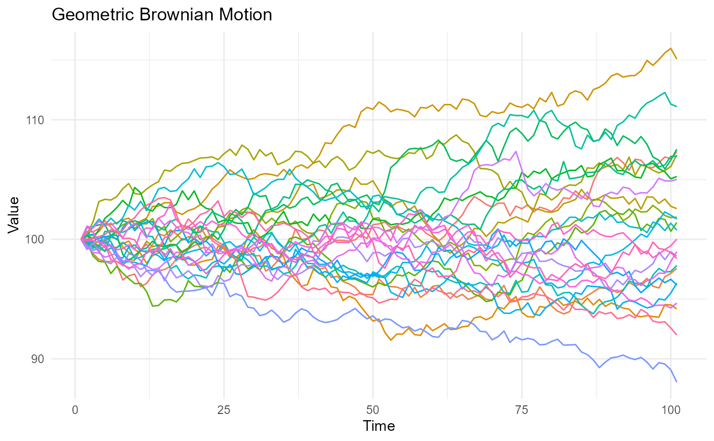

Create a Geometric Brownian Motion.
Usage
geometric_brownian_motion(
.num_walks = 25,
.n = 100,
.mu = 0,
.sigma = 0.1,
.initial_value = 100,
.delta_time = 0.003,
.return_tibble = TRUE
)Arguments
- .num_walks
Total number of simulations.
- .n
Total time of the simulation, how many
npoints in time.- .mu
Expected return
- .sigma
Volatility
- .initial_value
Integer representing the initial value.
- .delta_time
Time step size.
- .return_tibble
The default is TRUE. If set to FALSE then an object of class matrix will be returned.
Details
Geometric Brownian Motion (GBM) is a statistical method for modeling the evolution of a given financial asset over time. It is a type of stochastic process, which means that it is a system that undergoes random changes over time.
GBM is widely used in the field of finance to model the behavior of stock prices, foreign exchange rates, and other financial assets. It is based on the assumption that the asset's price follows a random walk, meaning that it is influenced by a number of unpredictable factors such as market trends, news events, and investor sentiment.
The equation for GBM is:
where S is the price of the asset, t is time, m is the expected return on the asset, s is the volatility of the asset, and dW is a small random change in the asset's price.
GBM can be used to estimate the likelihood of different outcomes for a given asset, and it is often used in conjunction with other statistical methods to make more accurate predictions about the future performance of an asset.
This function provides the ability of simulating and estimating the parameters of a GBM process. It can be used to analyze the behavior of financial assets and to make informed investment decisions.
See also
Other Generator Functions:
brownian_motion(),
discrete_walk(),
random_normal_drift_walk(),
random_normal_walk()
Examples
library(ggplot2)
geometric_brownian_motion()
#> # A tibble: 2,525 × 3
#> walk_number x y
#> <fct> <int> <dbl>
#> 1 1 1 100
#> 2 1 2 99.2
#> 3 1 3 99.8
#> 4 1 4 100.
#> 5 1 5 100.
#> 6 1 6 100.
#> 7 1 7 100.
#> 8 1 8 101.
#> 9 1 9 99.7
#> 10 1 10 100.
#> # ℹ 2,515 more rows
geometric_brownian_motion() |>
ggplot(aes(x = x, y = y, group = walk_number, color = walk_number)) +
geom_line() +
labs(title = "Geometric Brownian Motion", x = "Time", y = "Value") +
theme_minimal() +
theme(legend.position = "none")
